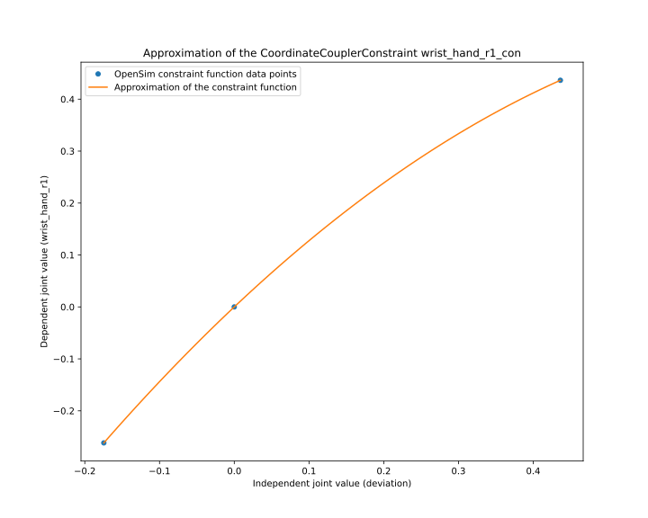
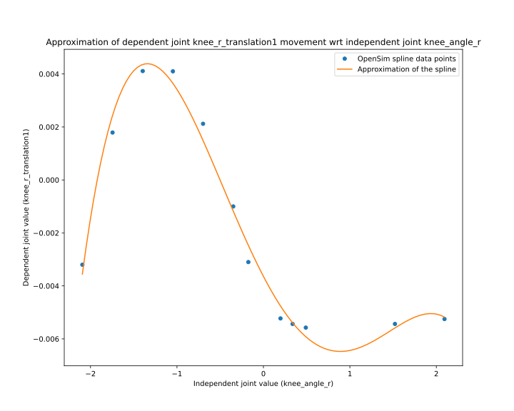

Step 1: XML Conversion¶
In this step, the OpenSim OSIM file is converted to a MuJoCO XML file. The conversion process is based on and largely similar to the previous O2MConverter, but rewritten in a way to modularize the code. The converter contains a separate Python class for each OpenSim XML element (called parsers), that is responsible for converting the element from OpenSim to MuJoCo. This architecture provides a flexible way to extend the parsers, or suggest improvements via pull requests.
The module myoconverter.xml contains all code related to this conversion step – see especially myoconverter.xml.converter.convert().
Conversion Process¶
Below you can find a brief explanation of how each element of an OpenSim model is converted to MuJoCo.
Ground¶
A Ground element may or may not be present in an OpenSim model. If a Ground is present, it is treated as a special case of an OpenSim Body element, see BodySet below.
ConstraintSet¶
ConstraintSet may contain different types of constraints to e.g. define how a specific degree-of-freedom is dependent on another degree-of-freedom.
Such constraints can also be defined in MuJoCo, with the exception that in OpenSim these dependencies may be defined with splines, whereas MuJoCo uses quartic functions. As we approximate splines with quartic functions, some inaccuracies may remain. During the conversion process these approximations are plotted as figures, see figure below for an example.
{kind=link}
See myoconverter.xml.constraints for all types of constraints that are currently supported.
BodySet¶
BodySet includes all Body elements that define the skeleton of a model. Each Body may have one or multiple meshes, that are converted into STL file format for the MuJoCo model.
Body elements and related meshes are represented in a similar way in MuJoCo (via body and geom elements), making the conversion a straight-forward process.
See myoconverter.xml.bodies for all types of bodies that are currently supported.
WrapObjectSet¶
WrapObjectSet defines wrapping objects, over which tendons may wrap. MuJoCo supports similar functionality via tendon/spatial/geom, but the selection of wrapping objects is slightly narrower; OpenSim has wrapping objects for cylinders, spheres, ellipsoids, and tori, whereas MuJoCo only offers sphere and cylinder geoms for this purpose. The OpenSim elements WrappingTorus and WrappingEllipsoid are approximated with sphere geoms, and the position of WrapEllipsoid is further optimised in subsequent optimisation steps.
See myoconverter.xml.wrap_objects for all types of wrap objects that are currently supported.
JointSet¶
Body elements of a model are linked together via Joint elements, defined in the OpenSim model’s JointSet. Each Joint has a parent Body and a child Body, and the joint specifies how these bodies translate and rotate with respect to each other.
As with Body elements, Joint elements are represented in a MuJoCo in a quite similar way (via joint elements). However, there are three major differences that make the conversion of Joint elements difficult: 1) the parameterisation of joints are different, 2) the attributes of joints are different, and 3) we model spline dependencies with quartic functions.
Parameterisation of joints
Joints are parameterized differently in OpenSim and MuJoCo. In OpenSim, a Coordinate (e.g. flexion in the mobl_arms model) parameterises a CustomJoint. The Coordinate itself can have a range of values to which it is bound (e.g. for flexion the range is [-1.22, 1.22]). A CustomJoint has 3 rotational transforms and 3 spatial transforms. Each of these transforms can be dependent on the Coordinate. For example, rotation3 in the radiocarpal CustomJoint (where flexion is defined), has a linear dependency on flexion , such that the original range of the Coordinate [-1.22, 1.22] is mapped to a new range [-0.61, 0.61]. In MuJoCo the joints aren’t parameterised in this way, but these dependencies can be modelled with equality constraints. During the conversion process, the Coordinate flexion is “designated” to be a specific MuJoCo joint, i.e., rotation3 of the OpenSim model is basically defined to be the flexion joint in the MuJoCo model. To make matters worse, other joints in the OpenSim model (like wrist_hand_r3) can be dependent on the flexion Coordinate. But now flexion is defined to be a joint in the MuJoCo model, which can have a different range ([-0.61, 0.61] as per the rotation3 joint) from the original range of the flexion Coordinate ([-1.22, 1.22]). Modelling these dependencies is tricky, and some inaccuracies may remain in the converted model.
Attributes of joints
The attributes defining the dynamics of joint movement are different in OpenSim and MuJoCo. During the conversion process these attributes are converted as faithfully as possible, but, some inaccuracies may remain.
Modelling splines with quartic functions
A specific degree-of-freedom (e.g. a translational transform of a CustomJoint element) may have a non-linear dependency on a Coordinate that parameterises the joint. In OpenSim these dependencies are often modelled with splines, which we approximate with quartic polynomials in the converted model. These approximations may introduce some inaccuracies in the movements of the joints. See figure below for an example of a such approximation.
{kind=link}
See myoconverter.xml.joints for all types of joints that are currently supported.
ForceSet¶
ForceSet defines the actuators that produce forces acting on tendons that are fixed to the bodies. MuJoCo supports actuators that model similar musculo-tendon units as defined in OpenSim, but the implementation details are significantly different. These implementation details are a major source of inaccuracy during the conversion process. We try to copy the attributes as faithfully as possible during the conversion process, but this is not always possible. Some MuJoCo muscle parameters, such as lengthrange, dynprm, gainprm, biasprm, are set to arbitrary default values during conversion, but are then further optimised in subsequent optimisation steps. There may still remain some muscle parameters that are not converted nor optimised, and we note that the muscle/force parsers require further development.
See myoconverter.xml.forces for all types of forces that are currently supported.
PathPointSet¶
PathPointSet defines a tendon’s fixation points to bodies. MuJoCo supports similar functionality via tendon/spatial/site elements. There are two main sources of inaccuracy related to specifically the conversion process of OpenSim’s ConditionalPathPoint and MovingPathPoint elements.
Conversion of MovingPathPoint
A MovingPathPoint describes how a path point moves w.r.t a degree-of-freedom. To model the movement of a moving path point, we need to create an imaginary body, to which a path point is fixed, and a set of joints and equality/joint constraints to move the body according to the dependencies. These dependencies may be defined via splines in OpenSim, but in the converted model we use quartic polynomials, which introduce some inaccuracies. See the figures below for an example of a good approximation (left), and a not-so-good approximation (right).


Conversion of ConditionalPathPoint
ConditionalPathPoints define path points for muscle tendons which are active only if a specific condition is met, e.g., if a joint value is between some range. In MuJoCo we can’t enable/disable tendon path points run-time, so we need to be more creative. Essentially the ConditionalPathPoints are modelled as MovingPathPoints, where the conditional path point coincides with an “anchoring” static path point when the condition is not met, and then moves to the actual position once the condition is met. If a conditional path point cannot be “anchored” to a static path point, then it is modelled as a static PathPoint.
The movement of a conditional path point is modelled either as a step function (path point is active when joint value is higher/lower than a threshold), or as a rectangular function (path point is active when joint value is between some range). It is not possible to model a step or a rectangular function with a quartic function in MuJoCo, so we simply approximate the step function with a linear function (see left figure below), and the rectangular function with a quadratic function (see right figure below). These approximations are agnostic to where exactly the step or rectangle is located, but rather make sure the conditional path point never goes outside its defined range. We have found this to be a good enough approximation.
{kind=link}
{kind=link}
See myoconverter.xml.path_points for all types of path points that are currently supported.
PathWrapSet¶
PathWrapSet defines how a tendon wraps around WrapObjects. Although MuJoCo supports similar behaviour for tendon elements, the conversion process of PathWraps is likely the most difficult and imprecise part of the model conversion step.
Parsing and converting wrapping site locations (PathWrap elements in the OpenSim model) is largely based on heuristics. If the wrapping site locations are not defined in the OpenSim model (via the range parameter of a PathWrap), we try to approximate wrapping site locations based on distances to wrapping objects. Specifically, we calculate distances between tendons (or segments of tendons) and all applicable wrapping objects, and decide the wrapping sites based on those distances – if a segment (two consecutive sites) is close enough to a wrapping object, we add a wrapping site to the MuJoCo model between those sites. This approach only works with static path points, and not ConditionalPathPoints or MovingPathPoints, and the approach also relies on the assumption that wrapping objects are always close to the tendons (distances are estimated when MuJoCo model is in default pose). However, the locations of wrapping sites are later further optimized in the moment arm optimisation step.
See myoconverter.xml.path_wraps for all types of path wraps that are currently supported.
MarkerSet¶
MarkerSet defines positions of markers in the OpenSim model, that are originally meant for e.g. scaling of a biomechanical model to a specific subject’s anatomy. These marker positions are converted to the MuJoCo model as well, and we use them in the later optimisation steps.
See myoconverter.xml.markers for all types of markers that are currently supported.